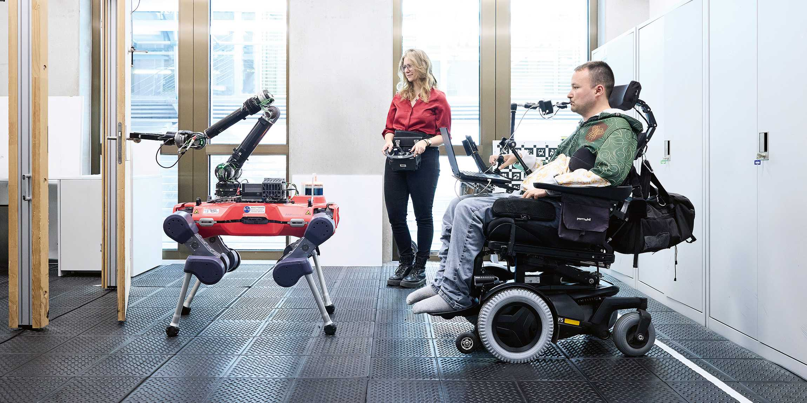

La nanotecnología y la robótica están revolucionando múltiples campos, desde la medicina hasta la logística y la defensa. Estos avances no solo prometen mejorar la calidad de vida de las personas, especialmente aquellas con discapacidades o enfermedades crónicas, sino que también están transformando cómo interactuamos con la tecnología en nuestro día a día. A continuación, se presentan algunos de los desarrollos más destacados en estas áreas.
Recientemente, un grupo de investigadores del Centro Alemán de Investigación del Cáncer ha desarrollado un convoy de microbots, conocidos como "train bots", que han sido utilizados con éxito en una cirugía endoscópica mínimamente invasiva. Estos pequeños robots, de tamaño milimétrico, están diseñados para navegar por el interior del cuerpo humano y realizar procedimientos quirúrgicos en áreas de difícil acceso, como el conducto biliar. Utilizando un campo magnético externo para su control, estos robots pueden eliminar obstrucciones mediante un proceso llamado electrocauterización. Este avance no solo promete hacer que las cirugías sean menos invasivas, sino que también puede acelerar el tiempo de recuperación del paciente.
El robot cuadrúpedo ANYMal, de ETH Zurich, ha sido modificado para mejorar su capacidad de escalar escaleras, gracias a la implementación de patas en forma de gancho. Este desarrollo es especialmente significativo para las personas con discapacidades físicas, ya que permite que los robots ayuden a superar barreras arquitectónicas en la vida diaria. En competencias como el Cybathlon, se demostró cómo estos robots, controlados por usuarios con discapacidades, pueden realizar tareas cotidianas como abrir puertas o recoger objetos, marcando un avance en la accesibilidad y la asistencia tecnológica.
La colaboración entre Surf Robotics y Wing Aviation está llevando la entrega de productos a un nuevo nivel mediante la combinación de robots terrestres y drones. En este sistema, los robots recogen pedidos de restaurantes y los transportan a estaciones de transferencia, donde los drones los recogen para entregarlos a los clientes. Esta integración no solo mejora la eficiencia logística, sino que también reduce costos operativos, lo que podría hacer que las entregas sean más accesibles para las empresas y los consumidores.
Un ensayo clínico ha demostrado la posibilidad de una "cura funcional" para la diabetes tipo 1 utilizando células madre de un paciente. Tras un tratamiento que implicó reprogramar células madre de tejido adiposo, estas células se transformaron en células productoras de insulina y fueron trasplantadas en el paciente. Después de dos semanas del trasplante, la necesidad de insulina del paciente comenzó a disminuir, y después de 75 días, se mantuvo libre de insulina durante más de un año. Este enfoque innovador podría revolucionar el tratamiento de la diabetes tipo 1, aunque aún se enfrenta a desafíos, como la necesidad de suprimir la respuesta autoinmune del paciente.
El sistema de defensa Leonidas, desarrollado por Epirus en colaboración con la Oficina de Investigación Naval de EE. UU., utiliza microondas de alta potencia para interceptar y neutralizar enjambres de drones. Este sistema portátil y maniobrable permite a los militares proteger áreas críticas de múltiples ataques de drones simultáneamente. Su tecnología se basa en pulsos controlados por software, lo que lo hace efectivo y fácil de operar en entornos de combate. Se espera que el sistema se entregue para pruebas antes de que finalice 2024, marcando un avance significativo en la defensa contra amenazas aéreas.